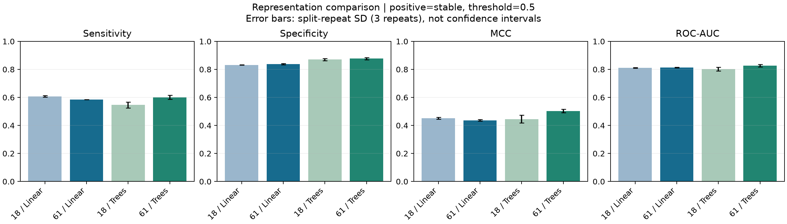
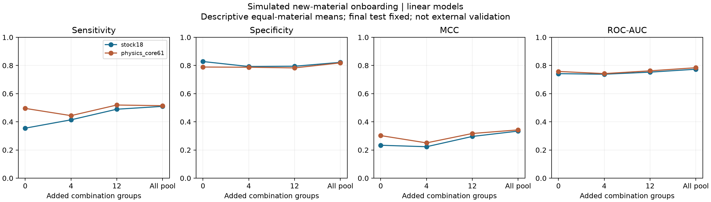
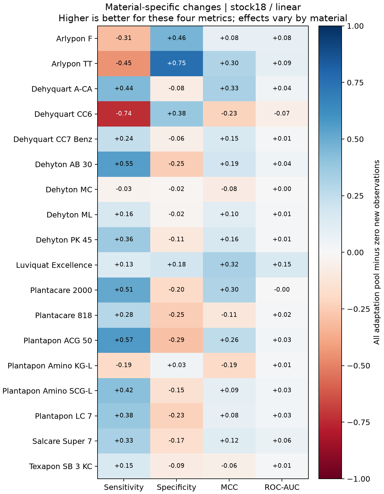
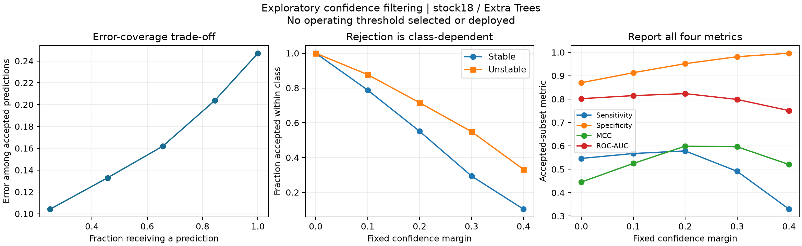

2026-11-02 | revision_v1 | 공개 실측 데이터의 내부 비교·모의 신규 원료 편입 평가
판단: 앱 시연만을 핵심 결과로 삼기에는 연구 기여가 약합니다. 이번에는 입력 표현, 신규 원료 적응 데이터의 양, 예측 보류의 클래스별 영향을 비교하는 재현 가능한 실험으로 확장했습니다. 일부 개선과 일부 역효과가 함께 나타나, 원료 변경 시 모델을 언제 믿고 언제 보류해야 하는지를 연구할 근거가 생겼습니다. 독립 외부검증이나 실제 신규 원료 실험이 완료된 것은 아닙니다.
| 요청 | 반영한 내용 | 완료 범위 |
|---|---|---|
| 재학습·최종 평가 분리 | 식별자·중복 조성을 연결한 그룹 분할, A 개발/B 최종 평가 잠금, 모의 실험의 고정 시험셋 | 코드·양식·모의 평가 완료. 실제 배치 독립성은 실측 식별자 확인 필요 |
| 미확인 원료·범위 밖 예측 보류 | INCI/SMILES 자동 대체 제거, 공급사·등급·로트 근거 대조, 예측 직전 차단 | 개선 앱에서 확인. 실제 외부 원료 승인 기록은 0개 |
| 보간 판정 개선 | 동일 원료 조합의 관측 처방들이 이루는 볼록껍질 검사, 단일 관측점 농도 변경 보류 | 기하학 검사 완료. 기하학적 지지를 성능 보증으로 표시하지 않음 |
| 최소 실험·통과 기준 | 클래스별 정밀도 시나리오, 네 지표·보류율·회귀오차·독립성 기반 판정기 | 조건 미설정·독립성 미확인은 HOLD. 실제 허용오차는 용도와 실험 변동을 보고 정해야 함 |
점도·탁도는 안정성 분류와 별도로, 실측 안정·해당 물성 측정 처방의 공동 조성 지지를 검사합니다. 원료 확인 기록과 안정성 점수만으로 물성 예측을 허용하지 않습니다. 이미 측정한 처방은 예측값 대신 실측값을 보여줍니다.
812개 제형(안정 294·불안정 518), 점도 293개·탁도 294개를 사용했습니다. 보강 입력은 기존 18개 투입량에서 만든 역할·계면활성제 종류·활성분 범위·고분자 등급 등 61개 특성입니다. 새 실측 라벨이나 완전한 분자 조성을 추가한 것은 아닙니다. 114개 상호작용 입력은 이번 주 비교에 포함하지 않았습니다.
입력 비교는 기존 원료 조합 475개를 분리한 3회 5-fold 분할을 유지했습니다. 선형 모델과 Extra Trees의 설정, 양성=안정, 임계값 0.5를 고정했습니다. 전처리는 각 학습 자료에서만 적합했습니다. 원논문 활성분 기준과 PK45 공급사 수치 시나리오는 별도로 계산했습니다.
신규 원료 모의 편입은 18개 원료 모두를 대상으로 3회 분할했습니다. 해당 원료가 없는 자료의 20% 그룹은 기존 원료 성능 평가로 보류하고, 해당 원료가 있는 자료의 30% 그룹은 최종 평가로 잠갔습니다. 나머지 개발 자료에서 0·4·12·전체 조합 그룹을 순서대로 추가했습니다. 각 예산·표현·타깃에서 모델을 처음부터 학습했고, 이미 전체 자료를 본 저장 모델을 재사용하지 않았습니다.
신규 원료 실험은 선형 모델에 한정됩니다. 그룹 수가 같은 예산에서도 실제 처방 수는 다릅니다. 4그룹은 4~16개(중앙값 7), 12그룹은 13~37개(중앙값 20), 전체 개발 풀은 76~320개(중앙값 105.5) 처방입니다. ‘실험 네 번이면 충분하다’는 해석은 허용되지 않습니다.
모든 원료와 실패 사례를 포함했습니다. 원료별로 3회 평균을 구한 뒤 18개 원료를 같은 가중치로 요약했습니다. 여러 원료 평가에 같은 처방이 반복 등장하므로 서로 독립인 18개 외부 데이터셋이 아닙니다. 배치 식별자는 원자료에서 확인되지 않아 제조 배치 독립성은 미해결입니다.
입력·코드·분할·계획의 해시는 새 예측 전에 고정했습니다. 다만 원자료와 이전 기준선 결과는 이미 검토했던 자료이므로 완전히 처음 보는 시험셋 또는 전향적 사전등록이라고 주장하지 않습니다. 이번 재실행은 CSV 수치의 round-trip 읽기를 통일했으며 과거 파일 읽기와의 미세한 수치 차이를 숨기지 않고 같은 실행 내 기준선과 비교합니다.
| 모델·입력 | Sensitivity | Specificity | MCC | ROC-AUC |
|---|---|---|---|---|
| 선형 / 18개 투입량 | 0.608 ± 0.005 | 0.832 ± 0.002 | 0.450 ± 0.007 | 0.811 ± 0.002 |
| 선형 / 61개 보강 | 0.585 ± 0.000 | 0.837 ± 0.005 | 0.437 ± 0.006 | 0.813 ± 0.003 |
| 선형 / 61개·PK45 시나리오 | 0.585 ± 0.000 | 0.837 ± 0.005 | 0.437 ± 0.006 | 0.813 ± 0.003 |
| Extra Trees / 18개 투입량 | 0.546 ± 0.021 | 0.870 ± 0.009 | 0.445 ± 0.028 | 0.802 ± 0.013 |
| Extra Trees / 61개 보강 | 0.601 ± 0.014 | 0.877 ± 0.008 | 0.503 ± 0.013 | 0.827 ± 0.008 |
| Extra Trees / 61개·PK45 시나리오 | 0.601 ± 0.023 | 0.877 ± 0.009 | 0.503 ± 0.009 | 0.826 ± 0.009 |
평균±3회 분할 SD이며 신뢰구간이 아닙니다. Extra Trees의 민감도와 특이도는 함께 상승했고 격차는 약 0.324에서 0.276으로 줄었습니다. 그러나 안정 제형의 약 40%를 여전히 놓칩니다. 선형 모델은 보강 입력으로 민감도가 내려가고 특이도가 올라가, 입력 보강이 모든 모델에 유리하다는 결론은 성립하지 않습니다. 통계적 우월성이나 최종 채택을 확정하지 않았습니다.

| Extra Trees 회귀 | 입력 | 로그 MAE | 로그 RMSE | 로그 R² |
|---|---|---|---|---|
| 점도 | 18개 | 0.480 | 0.641 | 0.364 |
| 점도 | 61개 | 0.466 | 0.612 | 0.422 |
| 탁도 | 18개 | 0.376 | 0.535 | 0.240 |
| 탁도 | 61개 | 0.363 | 0.522 | 0.276 |
점도·탁도 회귀도 개선 경향이 있지만 정밀 처방 확정용 오차 기준을 충족했다고 판단한 것은 아닙니다. PK45 수치 시나리오의 영향이 이번 설정에서 작았다는 결과는 실제 원료 등급을 바꿔도 물성이 같다는 뜻이 아닙니다. 시나리오는 같은 실측 라벨에 다른 입력 가정을 적용한 계산입니다.
| 선형 모델 입력 | 추가 조합 그룹 | Sensitivity | Specificity | MCC | ROC-AUC |
|---|---|---|---|---|---|
| 18개 투입량 | 0 | 0.355 | 0.828 | 0.234 | 0.742 |
| 18개 투입량 | 4 | 0.414 | 0.793 | 0.223 | 0.738 |
| 18개 투입량 | 12 | 0.489 | 0.794 | 0.296 | 0.753 |
| 18개 투입량 | 전체 개발 풀 | 0.510 | 0.822 | 0.334 | 0.773 |
| 61개 보강 | 0 | 0.495 | 0.789 | 0.302 | 0.758 |
| 61개 보강 | 4 | 0.444 | 0.787 | 0.250 | 0.742 |
| 61개 보강 | 12 | 0.519 | 0.783 | 0.317 | 0.762 |
| 61개 보강 | 전체 개발 풀 | 0.514 | 0.818 | 0.343 | 0.784 |
61개 입력은 새 원료 자료가 0개일 때 더 높은 안정 제형 탐지율을 보였으나, 4그룹을 추가하면 두 클래스의 탐지율과 MCC가 평균적으로 낮아졌습니다. 일부 자료의 추가는 모델의 결정 경계를 불리하게 이동시킬 수 있으므로, 데이터가 늘면 반드시 좋아진다고 가정해서는 안 됩니다. 이는 관측된 현상이며 원인을 확정한 인과 분석은 아닙니다.
4그룹 적응 사례 54개 중 4개에는 신규 원료의 안정 처방 관측이 하나도 없었습니다. 이 분포는 추가 자료의 다양성과 클래스 지지를 점검할 이유를 보여주지만, 그 자체로 성능 저하의 원인을 입증하지는 않습니다.
전체 개발 풀을 추가한 경우 18개 투입량 모델의 MCC가 오른 원료는 13/18개였지만, 민감도와 특이도가 모두 오른 원료는 1/18개였습니다. 61개 입력도 두 클래스 탐지율이 동시에 오른 원료는 1/18개였습니다. 평균 향상과 개별 원료의 편입 승인 여부를 구분해야 합니다.


| 기존 원료 유지 평가 | 추가 그룹 | Sensitivity | Specificity | MCC | ROC-AUC |
|---|---|---|---|---|---|
| stock18 | 0 | 0.581 | 0.826 | 0.416 | 0.795 |
| stock18 | all | 0.585 | 0.822 | 0.415 | 0.799 |
| physics_core61 | 0 | 0.568 | 0.830 | 0.409 | 0.797 |
| physics_core61 | all | 0.566 | 0.825 | 0.401 | 0.801 |
새 원료 평가만 좋아지고 기존 원료 예측이 나빠지는 경우를 놓치지 않도록 기존 원료 시험셋도 유지했습니다. 이 결과에서도 입력별로 소폭 저하가 있어 신규 원료 성능 하나만을 최적화하는 자동 등록은 하지 않습니다.
| 고정 margin | 전체 예측 비율 | Sensitivity | Specificity | MCC | ROC-AUC |
|---|---|---|---|---|---|
| 0.0 | 1.000 | 0.546 | 0.870 | 0.445 | 0.802 |
| 0.1 | 0.845 | 0.567 | 0.913 | 0.525 | 0.815 |
| 0.2 | 0.656 | 0.578 | 0.952 | 0.599 | 0.823 |
| 0.3 | 0.456 | 0.491 | 0.981 | 0.596 | 0.799 |
| 0.4 | 0.249 | 0.330 | 0.996 | 0.520 | 0.751 |
| 고정 margin | 안정 클래스 예측 비율 | 불안정 클래스 예측 비율 | 남은 예측 오류율 |
|---|---|---|---|
| 0.0 | 1.000 | 1.000 | 0.247 |
| 0.1 | 0.788 | 0.877 | 0.204 |
| 0.2 | 0.551 | 0.716 | 0.162 |
| 0.3 | 0.294 | 0.549 | 0.133 |
| 0.4 | 0.103 | 0.332 | 0.104 |
margin은 |안정 점수−0.5|의 하한이며 보정된 확률이 아닙니다. 가장 강한 필터에서 남은 예측의 오류율은 낮아지지만 안정 제형의 약 90%가 제외되고, 남은 표본에서도 민감도·특이도 차이가 커집니다. 따라서 전체 오류율이나 AUC만으로 ‘더 신뢰할 수 있는 모델’이라고 결론 내리지 않습니다.

앱의 원료·조건·볼록껍질 기반 보류와 이 확신도 필터는 서로 다른 규칙입니다. 주평가가 조합을 통째로 제외하므로 엄격한 동일 조합 보간 규칙으로는 해당 OOF의 지원 비율이 0입니다. 이번 확신도 분석은 그 기하학 규칙의 정확성을 검증한 결과가 아닙니다. 같은 조합의 농도 보간 성능은 별도의 독립 제조·측정 자료 또는 다른 목적에 맞는 분할로 확인해야 합니다.
권장 제목: ‘상용 원료 변경에 대한 샴푸 물성 예측의 데이터 효율과 예측 보류: 그룹 평가 및 모의 편입 비교’. 연구의 핵심 기여는 새 알고리즘을 발명했다는 주장이 아니라, 원료 변경·입력 표현·추가 데이터·보류 정책을 같은 조건에서 비교하고 실패 조건을 재현하는 것입니다. 새 원료 예측·선택적 예측 자체는 기존 연구 주제이므로 세계 최초라고 주장하지 않습니다. [1–3]
| 우선순위 | 추가할 연구·기능 | 이유와 검증 방식 |
|---|---|---|
| 최우선 | 같은 실험 예산에서 자료 선택 전략 비교 | 무작위 선택 대 농도·조합 다양성 기반 선택을 새 버전 계획으로 비교. 최종 시험셋 고정, 양성·음성 결과를 미리 아는 선택은 금지 |
| 같이 비교 | 학습 내부의 클래스 가중치·임계값 선택 | 현재 고정 설정의 클래스 불균형을 개선할 수 있는지 A 내부 그룹 검증에서만 선택. 최종 시험셋에서 수치를 맞추지 않고 양쪽 탐지율과 예측 비율을 함께 확인 |
| 다음 | 원료별 적응 실패·성능 저하 원인 분석 | CC6처럼 성능이 떨어지는 원료를 포함해 데이터 수·클래스·농도·고분자 특성별로 분석. 사후 발견은 탐색적으로 표시 |
| 실험 가능 시 최우선 실증 | 신규 공급제품 또는 등급 1종의 전향적 편입 | 독립 제조 배치와 잠금 시험셋으로 모의 결과가 실제로 이어지는지 확인. 현재 연구의 가장 큰 한계를 직접 보완 |
| 후속 | 새 평가 자료에서 예측구간·보류 정책 검증 | 분포 변화 때문에 구간 보장이 깨질 수 있음을 평가. 높은 점수·좁은 구간을 신규 원료 승인으로 대체하지 않음 |
판단은 주제를 당장 바꾸기보다 이 비교 연구를 발전시키는 쪽입니다. 보강 입력의 효과와 소량 적응의 역효과가 실제 결과로 나타났기 때문입니다. 다만 앱 화면을 더 꾸미는 것만으로 높은 수준의 연구가 되지는 않습니다. 다음 기여는 ‘동일한 추가 자료 예산으로 원료별 균형을 얼마나 개선할 수 있는가’에 답하거나, 실제 새 원료의 독립 실증을 확보하는 데서 나와야 합니다.
입력 비교 270회, 모의 편입 1,296회의 모델 적합을 수행했습니다. 이는 독립 실험 횟수가 아니라 계산 횟수입니다. 모든 지표를 저장 예측에서 재계산했고, 예측별 학습·평가 그룹 및 적격 타깃을 확인했으며, 대표 6개 적합을 다시 실행해 예측을 대조했습니다. 앱은 화면 초기화·후보 계산·미지원 원료 보류 흐름을 점검했습니다.
원본 Word, 기존 앱·모델·데이터와 GitHub는 변경하지 않았습니다. 개선 앱은 test1/revision_v1/app.py입니다. 기존 학습 모델을 자동 교체하지 않았으며 외부 원료 승인 기록도 비어 있습니다. 실제 제품 용도의 민감도·특이도 하한, 회귀 허용오차와 제조 배치 변동은 팀이 목적에 맞게 정하고 실측으로 확인해야 합니다.
python -m unittest discover -s tests -v python -B src/verify_revision.py --refit python -m streamlit run app.py --server.address 127.0.0.1 --server.headless true
[1] Chitre et al. (2024), 공개 샴푸 자료: https://pubmed.ncbi.nlm.nih.gov/38961122/ [2] scikit-learn, 그룹 평가·학습 자료에서만 수행하는 전처리: https://scikit-learn.org/stable/modules/cross_validation.html [3] Geifman & El-Yaniv (2019), SelectiveNet, 예측 보류의 risk–coverage 관점: https://proceedings.mlr.press/v97/geifman19a.html [4] NIST, 비율의 Wilson 신뢰구간: https://www.itl.nist.gov/div898/handbook/prc/section2/prc241.htm